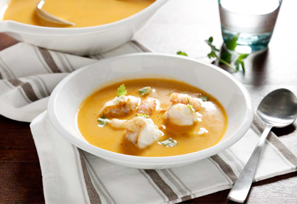
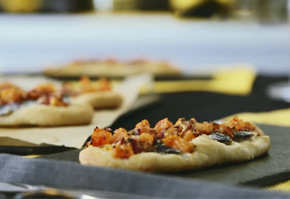

Codorniz Escabechada.
Una receta para todo el año, no solo para la temporada de caza. ¡Toma nota y date un homenaje!

Rollito de Lenguado.
Esta receta esta elaborada con uno de los pescados más saludables de nuestra gastronomía.

Merluza Rellena de Gambas.
Una receta original e ideal para estas fiestas navideñas.

Salmonetes a la plancha sobre Risotto de Remolacha.
Este delicioso arroz cremoso que se deshace en la boca , de textura untuosa y suave.

Cardo con Crema de Jamón y Champiñones.
Un plato ligero y muy sabroso. Perfecto como entrante y con el que seguro sorprenderás.

Huevos Rotos con Boletus y Trufa.
Un plato sencillo pero que siempre triunfa, aprovecha la temporada de setas y date lo mejor.

Sopa de Pescado con Cigalas y Rape.
Uno de los platos esenciales en los menús navideños es, sin duda, la sopa de pescado.
Sopa de Pescado con Cigalas y Rape.
Uno de los platos esenciales en los menús navideños es, sin duda, la sopa de pescado.

Coca de Sardinas.
Disfruta de la comida mediterránea con nuestra receta de coca de sardinas.
Coca de Sardinas.
Disfruta de la comida mediterránea con nuestra receta de coca de sardinas.